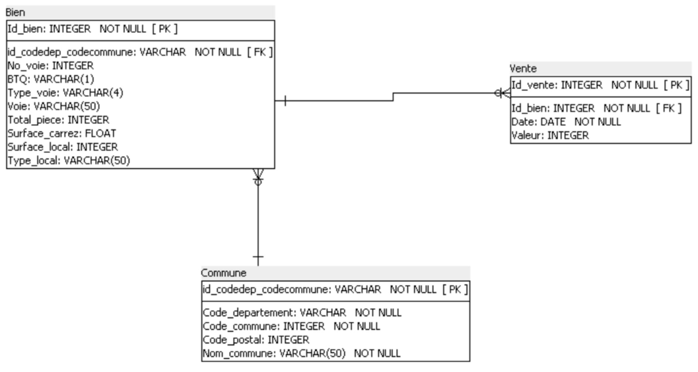
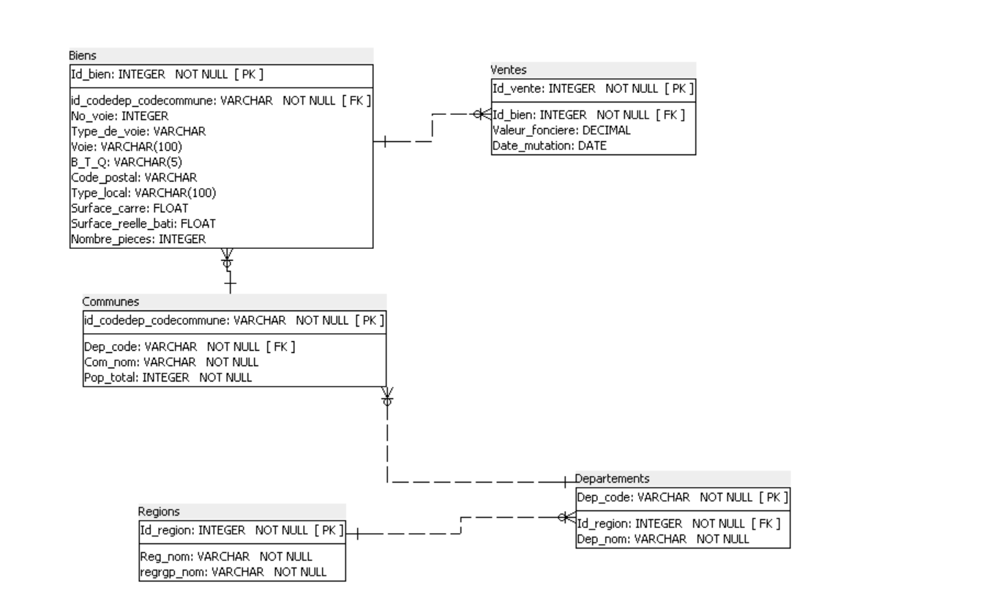

Le contexte et le besoin métier
Laplace Immo, réseau national d'agences immobilières, veut se démarquer en construisant un modèle de prédiction des prix de vente. Avant d'en arriver là, il faut une base fiable : Clara, la CTO, m'a confié la refonte du schéma qui collecte les transactions immobilières et foncières en France, à partir de trois sources publiques, les Demandes de valeurs foncières (DVF), les chiffres de population de l'INSEE, et le référentiel géographique de data.gouv.
Les données : sources, qualité, limites
Le schéma de départ ne comptait que trois tables, Bien, Vente et Commune, avec une clé déjà bien pensée, id_codedep_codecommune, la concaténation du code département et du code commune plutôt que le seul code département, qui ne suffit pas à identifier une commune de façon unique : plusieurs communes peuvent partager le même code postal.

La conformité RGPD se joue avant la base, pas dedans. Les fichiers préparés pour l'import ne contiennent que des informations sur le bien et la transaction, adresse, surface, nombre de pièces, prix, date. Aucun nom, aucun identifiant d'acquéreur ou de notaire n'est conservé : le principe de minimisation s'applique dès la préparation des CSV, avant même la création des tables.
La démarche
Étendre le schéma à cinq tables pour intégrer la population et le découpage région/département demandés par Clara, en respectant la 3e forme normale : chaque table ne porte que les attributs qui dépendent directement de sa propre clé. La redondance entre nom de région et code département, par exemple, est éliminée par la chaîne de clés étrangères Régions → Départements → Communes → Biens plutôt que répétée sur chaque ligne.

Chaque fichier source est ensuite retravaillé pour correspondre exactement aux types et contraintes des tables cibles avant le chargement : clés étrangères vérifiées, doublons éliminés, colonnes non retenues écartées dès cette étape plutôt qu'après coup dans la base. Une fois les cinq tables peuplées, une requête de contrôle compare le nombre de lignes par table à ce qui était attendu, la première des treize requêtes du projet, avant même de commencer l'analyse.
Les treize requêtes progressent en complexité : des comptages et moyennes simples d'abord, puis des sous-requêtes corrélées pour calculer une proportion, des CTE (WITH) pour comparer deux trimestres côte à côte, et une fonction de fenêtrage, ROW_NUMBER() OVER (PARTITION BY ...), pour classer les communes les plus chères à l'intérieur de chaque département plutôt que sur l'ensemble du pays. Le choix entre WHERE et HAVING revient plusieurs fois et vaut la peine d'être explicite : WHERE filtre les lignes avant regroupement, HAVING filtre un résultat déjà agrégé, comme un nombre de ventes par commune.
Les résultats et l'impact
Sur les 34 169 biens chargés, la première requête isole les appartements : 31 378 ont été vendus au premier semestre 2020, les 2 791 restants étant des maisons. Sur ce segment des appartements, un déséquilibre régional très marqué apparaît : l'Île-de-France concentre 13 995 ventes, presque quatre fois plus que la région suivante, Provence-Alpes-Côte d'Azur avec 3 649. Sur le prix, Paris domine sans partage, 12 084 € du m² en moyenne, plus de 1,6 fois les Hauts-de-Seine, deuxième département le plus cher à 7 301 €.
Deux résultats intéressent particulièrement un projet de prédiction de prix. D'abord, la taille compte plus qu'on ne le pense au m² : un appartement de 3 pièces se vend en moyenne 12,7 % moins cher au m² qu'un 2 pièces, un effet à intégrer dans tout modèle plutôt qu'un simple prix au m² uniforme. Ensuite, malgré le contexte du premier semestre 2020, les ventes progressent de 3,68 % entre le premier et le deuxième trimestre, un signal de marché résilient plutôt qu'en repli.
Les limites et les prochaines pistes
La base ne couvre qu'un semestre : aucune tendance pluriannuelle n'est possible en l'état, seulement une photographie. Le prix au m² moyen par département masque aussi de fortes disparités internes, un département cher peut contenir des communes à des niveaux de prix très différents, ce que les requêtes par commune commencent à révéler sans l'épuiser complètement.
Les pistes que je recommande : élargir la base à plusieurs années pour permettre une vraie analyse de tendance, avant d'aller plus loin vers le modèle de prédiction visé par la direction, et automatiser le chargement des mises à jour DVF plutôt que de repartir d'un import manuel à chaque nouveau semestre.